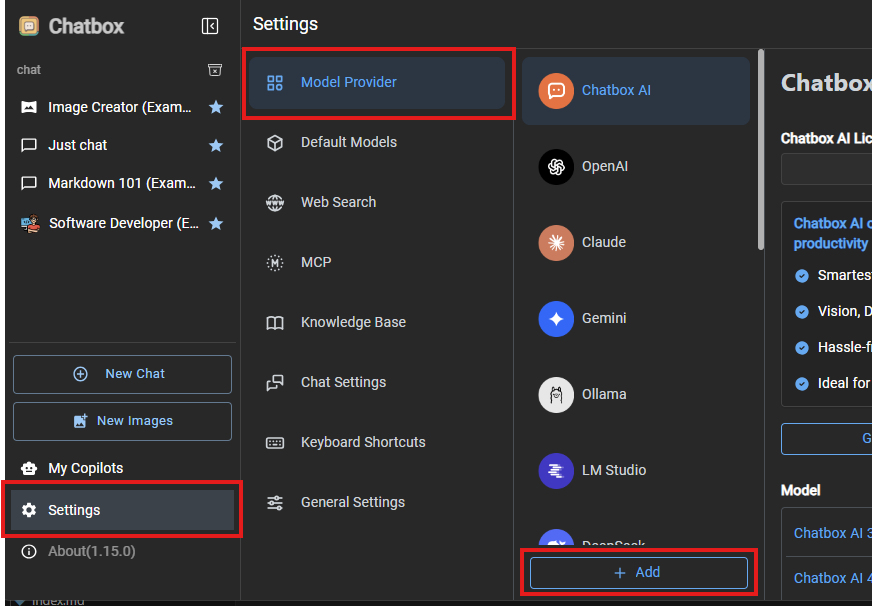
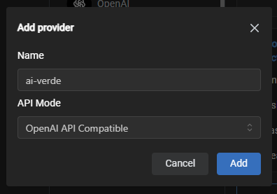
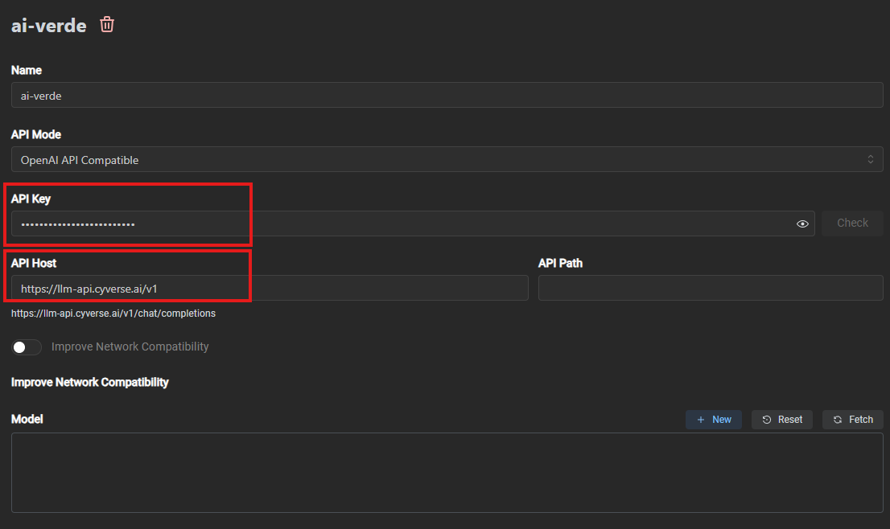
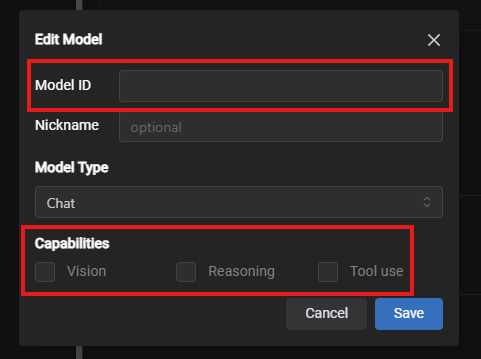
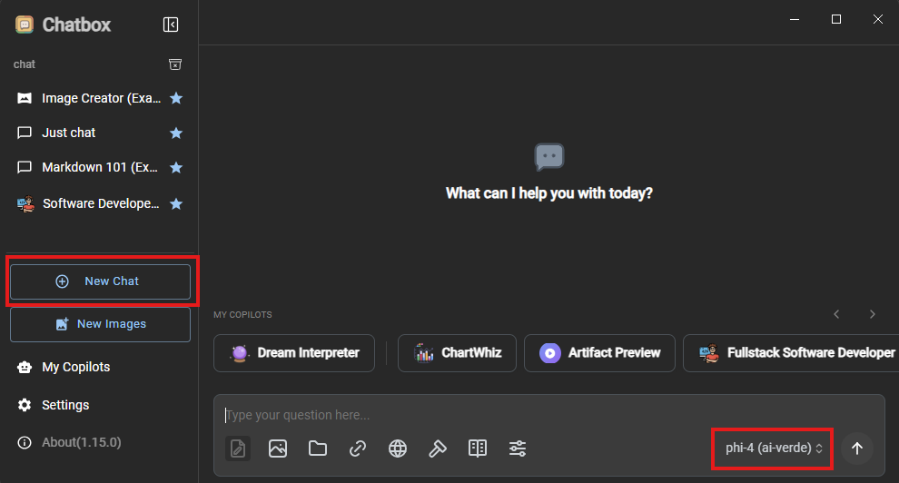

Chatbox AI¶
Chatbox AI is a desktop application that works on Windows, MacOS, Android, iOS, Web, and Linux. These instructions should apply for both Windows and MacOS versions with some variations between the two platforms.
Prerequisites¶
- Obtain your AI-VERDE API Key and API URL. Instructions can be found here.
- Note the model(s) you want to configure for Claude Code. Instructions can be found here.
- Install Chatbox AI by visiting this page: https://chatboxai.app/en#download.
- The remaining instructions Chatbox AI installed.
1. Configure AI-VERDE in Chatbox AI¶
For these steps, you can refer to the screenshot below
- Launch Chatbox AI
- Click on Settings
- Click on Model Provider
- Click the "+ Add" button
 - Enter "ai-verde" in the Name field
- Leave API Mode to "OpenAI API Compatible"
- Click Add button

You should then be shown the ai-verde configuration panel on the right. - Enter (or paste) your AI-VERDE Key in the API Key field
- Enter (or paste) the AI-VERDE API URL in the API Host field 
- In the model section, click on the "New" button, and a new model dialog box will be shown
- Enter the model in "Model ID" field
- In the capabilities, click on the capabilities if you know the model supports vision, reasoning, or tool use. !!! Note Capabilities for a model can be modified at a later time.
- Click on the "Save" button
 - You can repeat steps 10-13 to add additional models
- Optionally, after adding one or more models, you can click on the "Check" button to test the connection to AI-VERDE
Now you're ready to begin chatting!
2. Using Chatbox AI with configured models¶
- At any time, you can click on the "New Chat" button or click on a previous conversation on the left panel
- Select the model for this chat session, if necessary
 - Enter your request in the chat textbox to begin chatting with the model
There is a lot of functionality provided by Chatbox AI (as with many other chat interfaces). Feel free to explore!